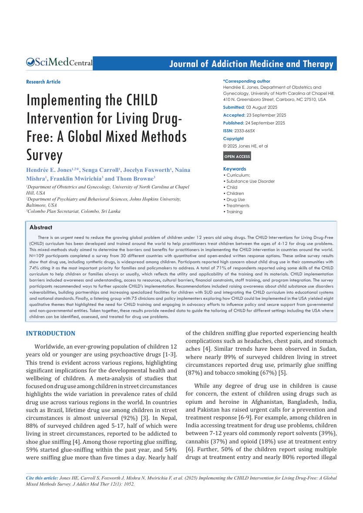

let me free
Women Writers Anthology: Voices on Silence
A reflection on ambition, expectation, and the desire to choose one's own path.
View anthology ↗02 / WORK SAMPLE
Writing, photography, and research.
01 / PUBLISHED POETRY
Two poems featured in anthologies published by 1455 Literary Arts. Read them here, or explore the collections through the publisher.
Women Writers Anthology: Voices on Silence
A reflection on ambition, expectation, and the desire to choose one's own path.
View anthology ↗Young Poets Anthology: Voices of Hope
On the pressure to have everything figured out, and finding a life beyond the screen.
View anthology ↗02 / TRAVEL PHOTOGRAPHY
Unexpected corners, architectural details, and different ways of seeing familiar places. A collection of moments I've noticed while traveling.
Select a photograph to view it in full.
03 / RESEARCH

Journal of Addiction Medicine and Therapy · 12(1): 1052 · September 2025
Co-authored a study examining how practitioners implement a child-focused substance use intervention across different settings. Survey responses from 109 participants in 30 countries highlighted its use in practice and barriers such as limited resources, training, and integration into existing services.
Read the paper ↗04 / PRESENTATIONS
HIMSS Global Health Conference & Exhibition
Presented research exploring how social determinants of health influence medication adherence, including economic instability, gaps in clinical data, and structural barriers. The poster also features my work adapting the SAS Medication Adherence Risk Model within the SAS Health platform.
Burch Fellowship · London, United Kingdom · Summer 2026
As a 2026 Burch Fellow at UNC-Chapel Hill, I spent eight weeks in London conducting independent archival research at the Wellcome Collection and British Library. Working with nineteenth-century medical manuscripts, administrative correspondence, and public health reports, I explored how British colonial authorities represented traditional Indian smallpox inoculation while promoting Jennerian vaccination.
I compared conflicting medical statistics and accounts of Indian inoculators, examining how scientific claims could also serve political and administrative goals. My research included historical case studies of J. R. Bedford, Robert Harvey, and reports surrounding an 1868 smallpox outbreak in Bengal. The experience strengthened my interest in medical history, evidence interpretation, and the perspectives missing from institutional records.
NEXT / KEEP EXPLORING